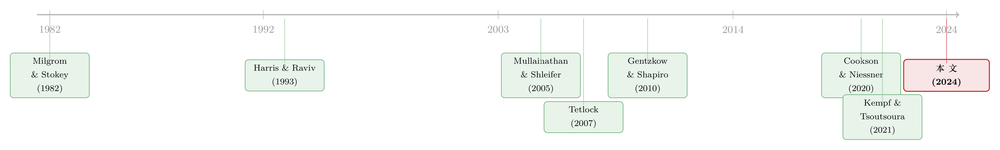

同一则财报，两个头条：政治极化怎样钻进了「本该客观」的财经新闻
本文读的是 Goldman, Gupta & Israelsen (2024, Journal of Financial Economics)：把保守派的《华尔街日报》和自由派的《纽约时报》对同一家公司、同一条财经新闻的报道摆在一起，作者发现报道的语气和取舍会随公司与报纸的政治立场而系统性地分化；而这种「政治诱发的分歧」会推高政治立场最极端那批公司的异常交易量。换句话说——本该客观的财经新闻，也被党派之争染了色，并且真的让人们多交易了。
1 引言：一条财报，两副面孔
先看一个例子。2020 年 1 月 31 日，亚马逊公布季度财报。《纽约时报》的标题是 “Amazon Powers Forward With Hefty Quarterly Profit”（亚马逊携丰厚季度利润高歌猛进）；同一天，《华尔街日报》的标题却是 “Amazon Misses \$1 Trillion Milestone”（亚马逊未能站上万亿市值）。
同一份财报，同一组数字，一个说「高歌猛进」，一个说「错失里程碑」。为什么？
作者给了一个线索：亚马逊在政治上更靠近民主党——2020 年，亚马逊员工和政治行动委员会（PAC）的竞选捐款里，有 85% 流向了民主党候选人。而《纽约时报》偏左、《华尔街日报》偏右。于是，偏左的报纸把偏左的公司写得更暖，偏右的报纸把它写得更冷。
这只是一个轶事。一个自然的问题是：把这个例子放大到几百家公司、三十年的新闻里，它还成立吗？如果成立，它又会不会真的影响到投资者的行为？这正是这篇论文要回答的两件事。
这篇文章的「悬念」其实非常干净：政治新闻有党派色彩，大家早就知道；但财经新闻的本职是「告诉你该怎么做投资决策」，它理应是客观的。 如果连财报报道都被党派立场掰弯了，那意味着投资者从主流财经媒体里读到的「事实」，本身就因人而异。这就触到了资产定价里一个很老的命题：分歧从哪儿来，又怎样变成交易。
2 为什么这件事值得较真：分歧—交易的老问题，一个新答案
资产定价里有一条几乎是公理的逻辑：投资者之间有分歧，就会产生交易（Varian, 1985；Milgrom & Stokey, 1982；Karpoff, 1986；Harris & Raviv, 1993）。这条逻辑的反面同样有名——著名的「无交易定理」（no-trade theorem, Milgrom & Stokey, 1982）说，如果所有人都是理性的、且只靠共同的公开信息更新，那么纯粹为了「我觉得这值更多」而互相成交，是不会发生的。
于是问题就变成：分歧到底从哪儿来？文献给了两个来源。一是异质先验（heterogeneous priors）——大家信念本来就不一样（Harris & Raviv, 1993；Kandel & Pearson, 1995）；二是信息差异（differential information）——大家拿到的信息不一样（Hong & Stein, 1999）。
接着，一批实证研究开始用各种「投资者中心」的数据去量这种分歧：Diether, Malloy & Scherbina (2002) 用分析师预测的离散度，发现分歧越大的股票未来收益越低；Cookson & Niessner (2020) 用投资者在社交平台上的发言，区分出「信念分歧」和「信息分歧」；Cookson, Engelberg & Mullins (2023) 进一步发现投资者会扎进「回声室」（echo chambers）。
但作者敏锐地指出了这条研究链上的一个缺口：上面这些度量都在「投资者那一端」——看的是投资者已经形成的信念和信息。可信息得先被「生产」出来，才能进到投资者脑子里。财经媒体正是信息生产的源头。如果连源头的新闻本身就因政治立场而分化，那它就是「投资者信息集互不相同」这件事的一块必要的前置积木。
这就是本文的第一个核心贡献：它不是去测投资者已有的分歧，而是直接去测「分歧的生产过程」——新闻在源头就被党派立场掰弯了。 而且作者强调，政治极化这个设定恰好同时满足「信息差异能持续支撑分歧、进而产生交易」的两个条件：(1) 极化让不同新闻源系统性地给出不同报道；(2) 人们会按自己的政治立场去消费不同的新闻源（Iyengar & Hahn, 2009；Gentzkow & Shapiro, 2011；Bakshy, Messing & Adamic, 2015）。第一条保证「报道真的不一样」，第二条保证「这种不一样不会被同一个人抵消掉」。
（关于「分歧—交易」这条主线，本博客已经聊过好几篇：分歧的「质量」比「数量」更要紧，可参见《分歧本身没那么重要，重要的是「信息质量」在变》；社交平台上同一只股票被说成两件事，可参见《注意力是共同的，情绪是私人的》。）
3 识别策略：怎样把「政治」从一团乱麻里揪出来
这是全篇最关键、也最该讲清楚的一节。
作者的难点在于：两家报纸对同一家公司的报道不一样，原因可能有一万种——它们覆盖的行业偏好不同、关注的事件不同、写作风格不同、甚至这家公司在哪家报纸投了更多广告。怎么才能断定，差异里确实有「政治」这一刀？
3.1 先量两样东西：报纸的语气，公司的立场
第一步是把「语气」量化。作者用金融文本分析的标准工具——Loughran & McDonald (2011) 的金融情感词典——数出每篇文章里的正面词和负面词，构造两个变量：
$$ \textit{Positive Words} = \frac{\textit{Positive Words}}{\textit{Positive Words} + \textit{Negative Words}}, \qquad \textit{Tone} = \frac{\textit{Positive Words} - \textit{Negative Words}}{\textit{Positive Words} + \textit{Negative Words}} $$
前者衡量「正面词占比」，后者衡量「正负之差」，都用百分数表示。
第二步是量「公司的政治立场」。作者用 Center for Responsive Politics（数据源自联邦选举委员会 FEC）的竞选捐款数据，把一家公司员工和 PAC 的捐款按党派加总，构造 % Contributions to Republican Party——某两年选举周期里，捐给共和党候选人的比例（由于几乎所有捐款都流向两党，它约等于 1 减去捐给民主党的比例）。捐款是衡量企业政治倾向被广泛采用的代理变量，也能反映高管个人的政治立场（Babenko et al., 2020；Fos, Kempf & Tsoutsoura, 2021）。
3.2 核心回归：用「交互固定效应」把别的解释一层层抹掉
有了语气和立场，作者跑的基准回归是：
这里 \(i\) 是公司，\(j\) 是报纸（WSJ 或 NYT），\(t\) 是文章发表日；WSJ 是「文章登在《华尔街日报》上」的指示变量。\(X_{i,t}\) 是公司年龄、市值、雇员数等控制变量。标准误在公司和「季度-年」两个维度上双重聚类（double clustered）。
真正关键的一步，藏在那两组交互固定效应里（方法上沿用 Fracassi, Petry & Tate, 2016 与 Kempf & Tsoutsoura, 2021）。\(\alpha_{i,t}\) 是公司-季度固定效应：它意味着，识别完全来自同一家公司、在同一个季度内，两家报纸报道的差异——任何「这家公司这季度出了大事」之类的冲击，对两家报纸是共同的，被一笔抹掉。\(\alpha_{j,t}\) 是报纸-季度固定效应：任何「这家报纸最近整体偏乐观」之类的报纸层面时变倾向，也被抹掉。再加上文章主题（topic）固定效应和分报纸的广告支出控制，作者还把比较进一步收紧到同一条公司新闻事件上。
于是 \(\beta_1\) 捕捉的就是一个很干净的东西：在剥掉了公司、报纸、时间、主题、广告之后，《华尔街日报》相对《纽约时报》，对越偏共和党的公司，是不是写得越正面。 如果政治真的影响了报道，\(\beta_1\) 应当为正。
这套「交互固定效应 + 同事件比较」的设计，本质上是把识别从「跨公司、跨时间的比较」收缩到「同一条新闻在两家报纸之间的比较」。这正是它比 Luo et al. (2020)、Baloria & Heese (2018) 等「假设某一家媒体有偏」的研究更进一步的地方——后者只看单一媒体，本文看的是两家媒体之间的极化。
4 数据
- 样本：以 2017 年市值排序的美国最大 100 家上市公司，且在 1991–2016 年间于 WSJ 或 NYT 至少有 10 篇提及的文章；剔除 REITs 和外国公司。
- 新闻：从 Factiva 抓取两报纸质版中只提及一家样本公司的全部文章，保留正文、版面页码、主题代码、记者署名。WSJ 共
35,406篇，NYT 共29,294篇。 - 政治：FEC / Center for Responsive Politics 的两年一周期竞选捐款（1990–2016），加总到公司层面；用上一周期的捐款匹配到当年的新闻。
- 市场与财务：CRSP（交易数据）、Compustat（财务）、Kantar Media（分报纸的公司广告支出，始于 1995 年）。
几个能帮你建立直觉的描述性数字：样本公司平均每个选举周期捐款约 $980,000，其中 54% 给共和党、43% 给民主党。报道整体偏负面——WSJ 的平均 Tone 是 -29.3，NYT 是 -27.9（财经新闻天然爱报忧）。而作者直接数出来的「好消息占比」%Good News，WSJ 是 0.47、NYT 是 0.44。
5 主要结果：从「报道分化」到「交易增加」
5.1 内涵与外延：两条边上都分化
作者把「报道的差异」拆成两条边。
内涵边（intensive margin）——怎么写：报纸对政治立场一致的公司用更多正面词、更暖的语气。一个最醒目的量级是：对于只捐共和党的公司，相比只捐民主党的公司，《华尔街日报》用的正面词比《纽约时报》多 15%。
外延边（extensive margin）——写不写、写多长：对政治立场一致的公司，报纸更可能去发一篇报道、更可能报喜而非报忧，且把文章写得更长。
更妙的是一个「准实验」式的旁证。2007 年，更保守的 News Corporation（新闻集团）收购了道琼斯（即《华尔街日报》的母公司）。作者发现，收购之后，《华尔街日报》对共和党倾向公司发文的概率和语气的正面程度都进一步上升——报纸的政治倾向变了，报道也跟着变了。
那这是不是只是「保守的记者跑去了保守的报纸」？作者用一个换工作的记者子样本回答了这个反驳：那些在两家报纸之间跳槽的记者，会改变自己的语气去迎合新东家的意识形态。换句话说，决定语气的是「公司与报纸的政治契合度」，而不是记者本人的立场。这一步把「是平台、不是人」钉死了。
5.2 真正的反转：分歧推高了「最极端公司」的交易量
报道分化了，然后呢？资产定价的人真正关心的是：这种分化会不会变成交易？
这里有个识别上的陷阱：报道不一样，也许只是因为「确实发生了值得报道的大事」（newsworthy events），而大事本身就会带来交易量。怎么把「分歧带来的交易」和「大事带来的交易」分开？
作者的招法很漂亮：比较政治立场最极端的公司和不那么极端的公司，对「分歧」的反应差异。 具体地，先用三个度量来刻画两报对同一公司、同一天报道的分歧——正面词之差（Difference in Positive Words）、语气之差（Difference in Tone），以及余弦相异度（Cosine Dissimilarity，即 1 减去两报文章「词向量」的余弦相似度，用来衡量用词本身有多不一样）。再定义 Top Donor：捐款排进前 20 百分位（捐给任一党派）的「政治极端」公司。
关键洞察是：新闻事件本身，并不会更偏爱政治极端的公司。所以如果交易量的上升只来自「大事」，它对极端公司和非极端公司应该是一样的；而如果上升来自「政治诱发的分歧」，它就应该在极端公司身上更强。作者还把因变量取成 Abnormal Volume——当日美元成交额除以过去 30 天的平均美元成交额——并控制住一切可观测与不可观测的、时变的公司与新闻特征。
结果是清晰的反转：两报报道的分歧越大，政治最极端那批公司的异常交易量上升得越多。 一个有量级的说法是——把「当天两报语气毫无差异」和「语气差异最大」两种情形相比，对一个 Top Donor 公司而言，其日异常交易量比非 Top Donor 公司高出 30%。用「正面词之差」和「余弦相异度」做同样的练习，结论一致。作者还检验了这不是被某类特定新闻主题或最大几家公司驱动的——比如，财报公告引起的分歧，对异常交易量的影响和其他主题的分歧并无两样。
把两步连起来：财经新闻在源头被政治掰弯 → 投资者拿到互相矛盾的「事实」→ 在最极端的公司上，他们用真金白银把分歧交易了出来。 这就是全文那个被反复讲透的「一个核心」。
6 文献脉络
把这篇论文放回到它生长的地方，能看到三条河在这里汇流。
第一条，是「分歧→交易」的理论河。 源头是 Milgrom & Stokey (1982) 的无交易定理与 Varian (1985)、Karpoff (1986)，再到 Harris & Raviv (1993)、Kandel & Pearson (1995) 把「异质先验 / 对公开信号的差异化解读」写成交易的引擎，以及 Hong & Stein (1999) 的「信息差异」一脉。实证上，Diether et al. (2002) 用分析师离散度、Cookson & Niessner (2020) 与 Cookson et al. (2023) 用投资者社媒发言，把这条河引向了「投资者端的分歧度量」。
第二条，是「媒体偏见」的政治传播河。 Mullainathan & Shleifer (2005) 的「新闻市场」、Groseclose & Milyo (2005)、Gentzkow & Shapiro (2006, 2010) 奠定了「媒体有党派倾斜、读者择其所好」的基础——尤其 Gentzkow & Shapiro (2010) 的语言学度量，正是本文用来给两报贴上「左/右」标签的依据。
第三条，是「财经新闻→股市」的实证河。 Tetlock (2007)、Barber & Odean (2008)、Fang & Peress (2009)、Engelberg & Parsons (2011)、Dougal et al. (2012)、Garcia (2013)、Hillert et al. (2014) 一路证明了新闻的语气和内容能预测交易与收益——但他们都默认财经新闻是「政治中立」的。
本文站在三条河的交汇点上：它把「媒体偏见」从政治版面延伸进了本应客观的财经版面（Gentzkow & Shapiro, 2006 早就提示过这种「客观性」预期），又给「分歧→交易」补上了信息生产端这块缺失的拼图。和它最贴近的邻居 Kempf & Tsoutsoura (2021)（信用评级分析师会按总统的党派「党派化」地行事）、Luo et al. (2020)（道琼斯被新闻集团收购后的「假新闻」效应）相比，本文的独到处在于：它抓的是两家媒体之间的极化，而非某一家媒体的单边偏倚。

（顺带一提，关于「政治极化如何反过来塑造企业行为」，本博客也读过一篇姊妹题材，可参见《为什么公司不站在中间：极化、使命与利润》。）
7 评论与延伸（Q&A + 研究方向）
(a) 几个可能的疑问
Q：用 15% 这种「正面词之差」来代表「偏见」，会不会只是写作风格不同，而非政治？
这正是那两组交互固定效应要解决的。
firm × quarter抹掉了「这家公司这季度发生了什么」，newspaper × quarter抹掉了「这家报纸整体的语气习惯」，再加主题固定效应和「同一条新闻事件」的比较。剩下能让 \(\beta_1\) 为正的，是「同一条新闻、同一时刻，越偏共和党的公司被《华尔街日报》写得越正面」——风格差异已经被报纸固定效应吃掉了。
Q：报道差异，会不会只是因为「确实有大新闻」，而大新闻天然带来交易量？
作者的核心识别就是冲着这个来的。新闻事件本身并不偏爱「政治极端」的公司，所以「大事驱动」的交易量对极端与非极端公司应当一视同仁；而结果是分歧对极端公司的异常交易量影响显著更强（最大语气差 vs. 零差异，Top Donor 比非 Top Donor 高 30%）。这个「差异中的差异」让「大事」这个混淆项很难解释结果。
Q：会不会是记者的个人立场，而非报纸的立场，在决定语气？
换工作记者的子样本回答了这一点：同一个记者跳槽到另一家报纸后，语气会转向新东家的意识形态。决定语气的是「公司—报纸」的政治契合度，不是记者本人。
Q：交易量上升，到底是「错误定价」还是「正常的信息处理」？是好事还是坏事？
论文的落点是交易量（分歧的体现），而非偏离基本面的错误定价，因此它谨慎地没有断言福利后果。它证明的是「政治诱发的分歧真实存在且能产生交易」，至于这些交易让价格更准还是更偏，本文留白——这恰恰是后续最值得做的地方。
Q：只看市值最大的 100 家公司、只看两家报纸，外部有效性够吗？
作者明说选大公司是因为它们新闻多、选两报是因为它们发行量最大、立场最对立且被金融文献反复使用。代价是结论对中小公司、对地方媒体或社媒未必外推——大公司被高度关注，党派信号也更强，效应可能被放大。
Q：财经新闻整体偏负面（Tone 约 −29），这会不会让「正面词」的度量很不稳？
作者用的是相对度量（正面词占正负词之和的比例、以及正负之差的归一化），并且识别靠的是两报之差而非绝对水平，所以整体偏负的基调会被差分和固定效应吸收，不直接威胁 \(\beta_1\) 的解读。
(b) 几个可能的研究问题与提案
1. 政治极化的新闻分歧，会传导到公司债与信用利差吗？ - 【经济故事】股票投资者会把分歧交易出来，那债券持有人呢？信用市场更看重「下行风险」，如果偏左报纸对偏左公司系统性「报喜不报忧」，会不会压低这些公司在某些投资者群体眼中的违约预期，从而在二级市场利差上留下党派印记？ - 【可行性】中。所需数据现成：TRACE（公司债成交）、Mergent FISD（债券特征）叠加本文的新闻—捐款数据。识别可沿用本文的「Top Donor × 分歧」交互，把因变量换成异常债券成交量或利差变动。难点是债券流动性低、成交稀疏，需要在事件窗口上做细致处理。
2. 外资持有人多的公司，对「美国国内党派新闻」是否「免疫」？ - 【经济故事】本文的机制依赖「人们按政治立场消费新闻」。但外国机构投资者大概率不读美国的党派叙事、也无党派身份。那么外资持股比例越高的公司，其交易量对这种政治诱发分歧的敏感度是否更低？这能反过来验证机制。 - 【可行性】中。数据用 FactSet/13F 的机构与外资持股，交乘本文的分歧度量。识别上要小心：外资持股本身与公司规模、行业相关，需要控制甚至工具化。doable，但机制检验的说服力取决于能否找到外资持股的外生变动。
3. 把社媒「回声室」接到主流媒体的「源头分歧」上，看分歧如何被放大。 - 【经济故事】本文证明源头新闻已分化，Cookson et al. (2023) 证明投资者会在回声室里自我强化。一个自然的问题是：源头的两报分歧，经过社媒回声室的「放大器」之后，对交易量的弹性会不会被进一步抬高？ - 【可行性】中高。数据可用 StockTwits/X 的投资者发言（Cookson & Niessner 一脉用过），与本文新闻—捐款数据按公司-日匹配。识别可做中介分析或交互（高回声室强度 × 报纸分歧）。挑战是社媒数据的覆盖年份偏晚，与 1991–2016 的新闻样本只在尾部重叠。
4. News Corp 收购作为冲击，能不能做更干净的双重差分？ - 【经济故事】本文已用 2007 年收购作为旁证，但只是「前后对比」。把它升级成正式的双重差分（处理组 = 共和党倾向公司，对照组 = 中性/民主党倾向公司，时间断点 = 2007），能更严格地估计「报纸所有权政治化」对报道与交易的因果效应。 - 【可行性】高。数据完全在本文样本之内，方法是标准 DiD，需检验平行趋势并处理「时变处理效应」（关于这点的陷阱，可参见《期限结构会自己动：当双重差分撞上一条收益率曲线》）。这是离 doable 最近的一个。
8 我的判断与参考文献
贡献。 这篇文章最扎实的地方，是把「分歧→交易」这条老链条的起点往前推了一格：以往我们测投资者已经形成的分歧，本文测的是分歧被「生产」出来的那一刻。它用「同一条新闻、两家报纸」的设计，加上交互固定效应和换工作记者的子样本，把「是政治、不是行业/事件/记者」这件事论证得相当干净。「本应客观的财经新闻也被党派染色」这个结论，本身就足够有冲击力。
对识别的担忧。 我有两点保留。其一，因变量落在交易量上，而交易量是分歧的体现，却不直接等于「错误定价」或福利损失——文章证明了「极化让人多交易」，但没回答「这些交易让价格更准还是更偏」，而后者才是政策上真正要紧的。其二，竞选捐款作为公司政治立场的代理，混杂了高管个人立场、行业游说需求、地域因素等多重信号；虽然文献广泛采用，但「捐款多」与「被某报偏爱」之间，仍可能残留一些固定效应抹不掉的、缓慢变化的匹配性（比如某行业既偏共和党、又恰好是《华尔街日报》的传统重点报道对象）。
后续想看到什么。 我最想看到三件事：一是把它推进到价格层面——分歧到底带来了可预测的收益反转还是漂移；二是接到信用市场和外资持有人上，检验机制的边界（见上面的研究提案 1、2）；三是把 2007 年收购做成正式 DiD，把「所有权政治化」的因果钉得更死。这篇论文打开了一扇门，门后还有很大的房间。
参考文献
- Bakshy, E., Messing, S., Adamic, L. (2015). Exposure to ideologically diverse news and opinion on Facebook. Science 348, 1130–1132.
- Barber, B., Odean, T. (2008). All that glitters: the effect of attention and news on the buying behavior of individual and institutional investors. Review of Financial Studies 21, 785–818.
- Cookson, J. A., Niessner, M. (2020). Why don't we agree? Evidence from a social network of investors. Journal of Finance 75, 173–228.
- Diether, K., Malloy, C., Scherbina, A. (2002). Differences of opinion and the cross section of stock returns. Journal of Finance 57, 2113–2141.
- Dougal, C., Engelberg, J., Garcia, D., Parsons, C. (2012). Journalists and the stock market. Review of Financial Studies 25, 639–679.
- Engelberg, J., Parsons, C. (2011). The causal impact of media in financial markets. Journal of Finance 66, 67–97.
- Fang, L. H., Peress, J. (2009). Media coverage and the cross-section of stock returns. Journal of Finance 64, 2023–2052.
- Fracassi, C., Petry, S., Tate, G. (2016). Does rating analyst subjectivity affect corporate debt pricing? Journal of Financial Economics 120, 514–538.
- Garcia, D. (2013). Sentiment during recessions. Journal of Finance 68, 1267–1300.
- Gentzkow, M., Shapiro, J. (2006). Media bias and reputation. Journal of Political Economy 114, 280–316.
- Gentzkow, M., Shapiro, J. (2010). What drives media slant? Evidence from U.S. daily newspapers. Econometrica 78, 35–71.
- Harris, M., Raviv, A. (1993). Differences of opinion make a horse race. Review of Financial Studies 6, 473–506.
- Hong, H., Stein, J. (1999). A unified theory of underreaction, momentum trading, and overreaction in asset markets. Journal of Finance 54, 2143–2184.
- Iyengar, S., Hahn, K. S. (2009). Red media, blue media: evidence of ideological selectivity in media use. Journal of Communication 59, 19–39.
- Kandel, E., Pearson, N. (1995). Differential interpretation of public signals and trade in speculative markets. Journal of Political Economy 103, 831–872.
- Karpoff, J. (1986). A theory of trading volume. Journal of Finance 41, 1069–1087.
- Kempf, E., Tsoutsoura, M. (2021). Partisan professionals: evidence from credit rating analysts. Journal of Finance 76, 2805–2856.
- Loughran, T., McDonald, B. (2011). When is a liability not a liability? Textual analysis, dictionaries, and 10-Ks. Journal of Finance 66, 35–65.
- Luo, M., Manconi, A., Massa, M. (2020). Blinded by perception? The stock market's reaction to politically aligned media. Working paper.
- Milgrom, P., Stokey, N. (1982). Information, trade, and common knowledge. Journal of Economic Theory 26, 17–27.
- Mullainathan, S., Shleifer, A. (2005). The market for news. American Economic Review 95, 1031–1053.
- Tetlock, P. C. (2007). Giving content to investor sentiment: the role of media in the stock market. Journal of Finance 62, 1139–1168.
- Varian, H. (1985). Divergence of opinion in complete markets: a note. Journal of Finance 40, 309–317.